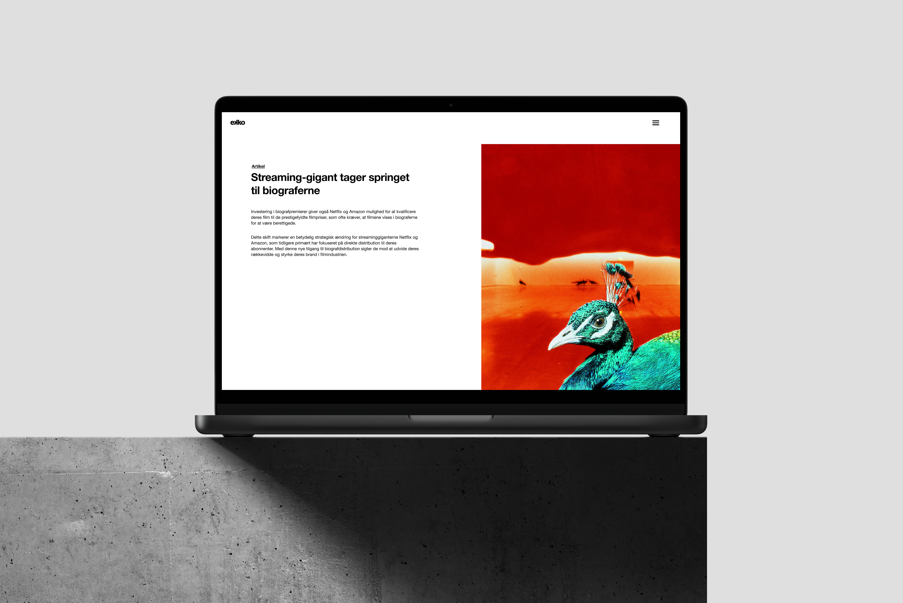

This redesign of Ekko Film magazine translates the magazine’s print identity into a responsive web format. A flexible grid, clear type hierarchy, and minimalist color palette ensure readability across devices. Interactive galleries, embedded videos, and filterable tags enhance user experience, while fast-loading, accessible elements keep performance sharp. The result is a scroll-based experience that feels true to the Ekko identity, reimagined for the web.